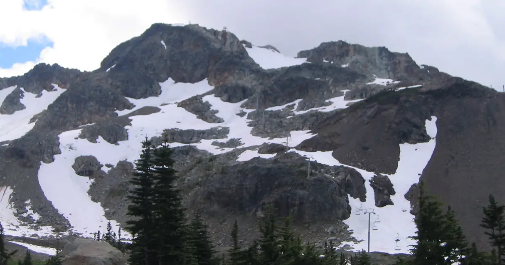
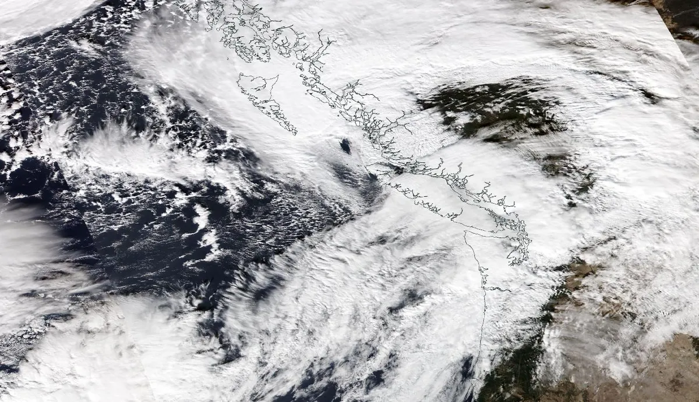
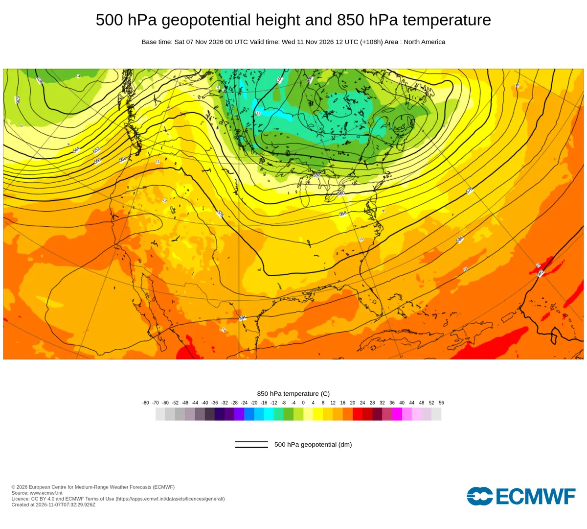
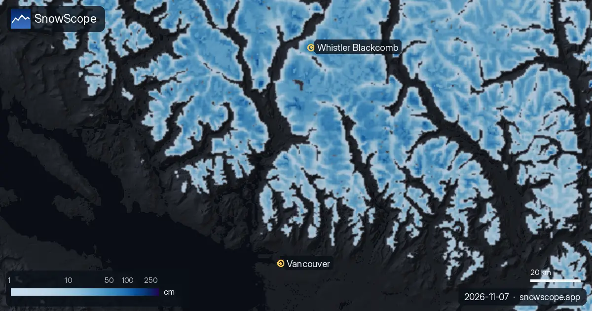
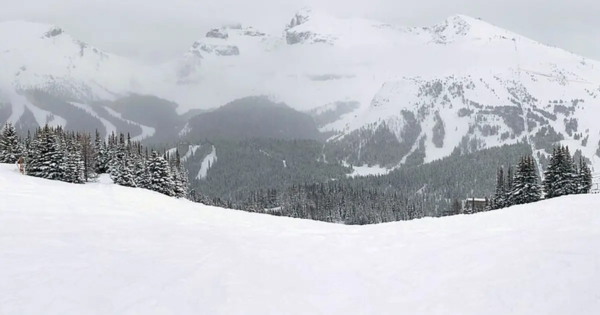

Une rivière dans le ciel sur Whistler : pourquoi un mètre de neige en haut et de la pluie en bas
Un train de tempêtes du Pacifique, alimenté par une rivière atmosphérique, frappe la chaîne Côtière du 7 au 12 novembre. Notre prévision donne environ 103 cm de neige fraîche à Whistler Blackcomb d'ici le 10 novembre, mais l'isotherme 0 °C oscille entre environ 1 410 et 2 920 m : beaucoup de neige en haut, de la pluie en bas, et un coup de chaud le mercredi 11 novembre.
Consultez les prévisions neige en temps réel pour Whistler Blackcomb sur l'application SnowScopeHauteurs de neige, alertes poudreuse et carte 3D, gratuitement.
Les chiffres
Sur le haut du domaine de Whistler (2 284 m), notre prévision du 7 novembre donne environ 192 mm d'eau du 7 au 12 novembre : 56 mm le dimanche 8, 21 mm le mardi 10, 40 mm le mercredi 11 et 73 mm le jeudi 12. Sur les 72 heures jusqu'au 10 novembre, notre prévision de neige donne +103 cm à Whistler Blackcomb, +99 cm à Ski Callaghan et +74 cm à Mount Cain sur l'île de Vancouver, avec une limite pluie-neige vers 1 300 m.
Au niveau de la mer, ces mêmes tempêtes donnent de la pluie : environ 135 mm à Vancouver sur les six jours, et jusqu'à 17 °C le mercredi 11 novembre.

Une rivière dans le ciel
Une rivière atmosphérique est un couloir d'air long et étroit, bas dans l'atmosphère, qui transporte une énorme quantité de vapeur d'eau, en général juste devant un front froid. On la mesure par le flux de vapeur porté par le vent : au-dessus de 250 kg d'eau par mètre et par seconde, on parle de rivière atmosphérique, au-dessus de 750 d'une rivière forte.
Au large de l'île de Vancouver, nous estimons ce flux à environ 946 le samedi 7 novembre et environ 987 le mercredi 11 novembre, et au-dessus de 250 pendant 95 heures sur les six jours. Le courant-jet vise droit sur la côte : vers 3 km d'altitude, le vent sur l'océan atteint 132 km/h, du sud-ouest.

Pourquoi la chaîne Côtière essore autant d'eau
Quand cet air humide atteint la chaîne Côtière, il est forcé de monter. L'air qui monte se détend et se refroidit, sa vapeur se condense en nuages et retombe en pluie ou en neige. C'est le soulèvement orographique, et il explique la progression de nos chiffres : environ 109 mm sur l'océan au large de l'île de Vancouver, 135 mm à Vancouver, 192 mm sur le haut de Whistler.
Une fois les crêtes principales franchies, l'air a perdu une bonne partie de son eau et redescend : c'est pourquoi les vallées plus à l'intérieur, à l'abri des pluies, reçoivent beaucoup moins.
Neige en haut, pluie en bas : la limite pluie-neige
L'air se refroidit avec l'altitude, d'environ 6,5 °C par km dans l'atmosphère standard ; dans cet air humide, on trouve environ +3 °C à 1 400 m et environ -4 °C à 3 000 m pendant les heures de précipitations. L'isotherme 0 °C est l'altitude où l'air passe sous zéro. Les flocons qui tombent en dessous commencent à fondre et ont besoin de quelques centaines de mètres pour fondre complètement : la limite pluie-neige se trouve donc environ 300 m sous l'isotherme 0 °C.
Cette altitude varie beaucoup d'un jour à l'autre : de 1 310 à 1 680 m le lundi 9, de 1 500 à 2 430 m le dimanche 8, puis de 2 390 à 2 920 m le mercredi 11, quand arrive l'air doux de la rivière atmosphérique, et de 1 730 à 2 490 m le jeudi 12. Pondérée par les précipitations, l'isotherme 0 °C est vers 2 090 m et la limite pluie-neige vers 1 790 m ; environ 88 % de l'eau qui tombe sur le haut du domaine devrait tomber en neige. Le bas, à 675 m, reçoit de la pluie presque tout le temps.
Mercredi, l'isotherme 0 °C monte jusqu'aux sommets ou au-dessus : attendez-vous à de la pluie ou à une neige très mouillée même en altitude, avant que l'air plus froid ramène la neige jeudi.
Ce que cela change pour les skieurs
La neige d'une rivière atmosphérique est lourde et humide : elle construit vite une bonne sous-couche, mais la pluie et la douceur de mercredi formeront une croûte à basse et moyenne altitude, recouverte par la neige fraîche de jeudi. Une surcharge rapide suivie d'un redoux est une recette classique de hausse du danger d'avalanche.
Les prévisions changent, surtout l'altitude de la limite pluie-neige. Consultez la carte de neige et lisez la prévision d'Avalanche Canada avant de sortir du domaine.

Ce que cela change pour vous
- La meilleure neige sera en altitude : au-dessus d'environ 1 800 m, la tempête tombe surtout en neige, en dessous surtout en pluie.
- Le mercredi 11 novembre est le jour doux : pluie ou neige mouillée même en haut ; la neige plus froide revient jeudi.
- Attendez-vous à une croûte sous la neige fraîche à moyenne altitude après mercredi.
- Hors domaine : lisez toujours d'abord la prévision officielle d'avalanche ; surcharge et redoux augmentent le danger.
Autres cartes (sites externes)
Références et crédits
- Ralph, F. M., Dettinger, M. D., Cairns, M. M., Galarneau, T. J. and Eylander, J. (2018). Defining 'atmospheric river': how the Glossary of Meteorology helped resolve a debate. Bulletin of the American Meteorological Society 99, 837-839. doi.org/10.1175/BAMS-D-17-0157.1
- Ralph, F. M., Rutz, J. J., Cordeira, J. M., Dettinger, M. D. et al. (2019). A scale to characterize the strength and impacts of atmospheric rivers. Bulletin of the American Meteorological Society 100, 269-289. doi.org/10.1175/BAMS-D-18-0023.1
- Ralph, F. M., Neiman, P. J. and Wick, G. A. (2004). Satellite and CALJET aircraft observations of atmospheric rivers over the eastern North Pacific Ocean during the winter of 1997/98. Monthly Weather Review 132, 1721-1745. doi.org/10.1175/1520-0493(2004)132%3C1721:SACAOO%3E2.0.CO;2
- Guan, B., Molotch, N. P., Waliser, D. E., Fetzer, E. J. and Neiman, P. J. (2010). Extreme snowfall events linked to atmospheric rivers and surface air temperature via satellite measurements. Geophysical Research Letters 37, L20401. doi.org/10.1029/2010GL044696
- Roe, G. H. (2005). Orographic precipitation. Annual Review of Earth and Planetary Sciences 33, 645-671. doi.org/10.1146/annurev.earth.33.092203.122541
- Minder, J. R., Durran, D. R. and Roe, G. H. (2011). Mesoscale controls on the mountainside snow line. Journal of the Atmospheric Sciences 68, 2107-2127. doi.org/10.1175/JAS-D-10-05006.1
- Wallace, J. M. and Hobbs, P. V. (2006). Atmospheric Science: An Introductory Survey, 2nd edition. Academic Press / Elsevier. ISBN 978-0-12-732951-2.
- American Meteorological Society, Glossary of Meteorology: 'Atmospheric river'. glossary.ametsoc.org/wiki/Atmospheric_river
- American Meteorological Society, Glossary of Meteorology: 'Freezing level'. glossary.ametsoc.org/wiki/Freezing_level
- American Meteorological Society, Glossary of Meteorology: 'Rain shadow'. glossary.ametsoc.org/wiki/Rain_shadow
- Forecast data: Open-Meteo.com (CC BY 4.0) from the ECMWF IFS (CC BY 4.0), run of 7 November 2026; new snow and snow depth: SnowScope forecast and snow model; chart: ECMWF open charts (CC BY 4.0); satellite image: NASA Worldview / NASA EOSDIS. open-meteo.com/
À propos de ces chiffres
Chiffres : prévisions du 7 novembre 2026 pour le 7 au 12 novembre (précipitations, température et vent à plusieurs altitudes sur le haut de Whistler, à Vancouver et sur l'océan au large de l'île de Vancouver) et la prévision de neige SnowScope à 72 heures du même jour. Nous avons calculé l'isotherme 0 °C à partir du profil de température et placé la limite pluie-neige environ 300 m plus bas ; le flux d'humidité est estimé à partir du vent, de la température et de l'humidité à huit altitudes. Les prévisions changent.
Citer ce bulletin
Pour la recherche, l'enseignement ou la presse : chiffres et graphiques réutilisables librement sous CC BY 4.0 avec cette citation.
SnowScope (2026), Une rivière dans le ciel sur Whistler : pourquoi un mètre de neige en haut et de la pluie en bas, https://snowscope.app/blog/fr/2026/11/whistler-atmospheric-river-physics-7-november-2026.html, consulté le 2026-11-07
SnowScope (Atlas Labs). (2026, November 7). Une rivière dans le ciel sur Whistler : pourquoi un mètre de neige en haut et de la pluie en bas. SnowScope snow reports. https://snowscope.app/blog/fr/2026/11/whistler-atmospheric-river-physics-7-november-2026.html
BibTeX
@misc{snowscope2026whistleratmosphericriver,
author = {{SnowScope (Atlas Labs)}},
title = {Une rivière dans le ciel sur Whistler : pourquoi un mètre de neige en haut et de la pluie en bas},
year = {2026},
month = nov,
howpublished = {\url{https://snowscope.app/blog/fr/2026/11/whistler-atmospheric-river-physics-7-november-2026.html}},
note = {Published 2026-11-08 17:40 UTC; accessed 2026-11-07}
}· CC BY 4.0 · Méthodes, données et outils →
Suivre Whistler Blackcomb
Gratuit : un message quand la neige arrive, et la météo chaque matin.
Autres bulletins neige

Banff Sunshine Village mois par mois : environ 100 cm à mi-pente en mars d'un hiver habituel sur 46 hivers passés, avril le plus enneigé en haut, saison jusqu'à fin mai.

Whistler Blackcomb pour tous les niveaux, avec notre historique : environ 370 cm au pic habituel à mi-pente sur 46 hivers passés, mars et avril les plus enneigés.

Whistler Blackcomb a reçu 75 cm de neige nouvelle au sommet en une semaine, puis une tempête douce avec 124 mm d'eau. Un guide simple sur la sous-couche, la neige fraîche, la pluie et la croûte.